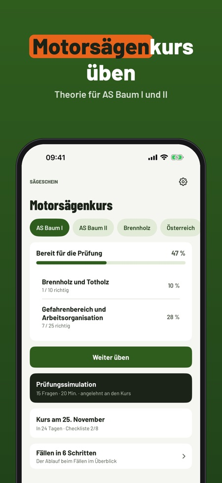
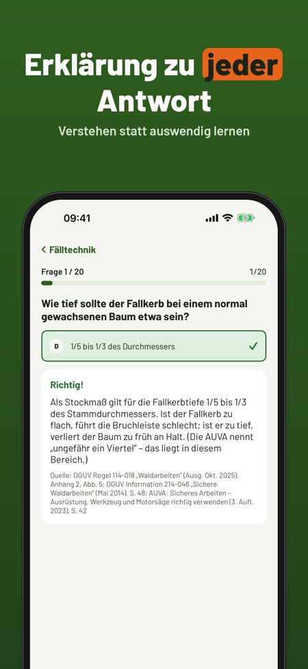
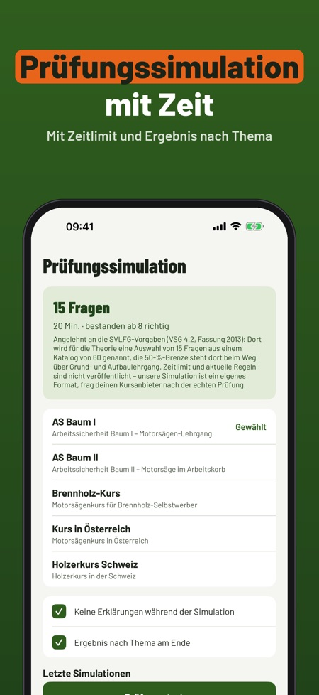

Sägeschein hilft dir, die Theorie für den Motorsägenkurs zu üben, für AS Baum I und II, den Brennholz-Kurs und Kurse in Österreich und der Schweiz. Jede Antwort kommt mit Erklärung.



Für AS Baum I und II, den Brennholz-Kurs und Kurse in Österreich und der Schweiz.
20 Fragen, die Begriffe und die Checkliste kannst du ohne Kauf nutzen.
Nein. Die Vollversion ist ein Einmalkauf und schaltet alle Fragen, Simulationen und die Statistik frei. Kein Abo.
Ja, die Prüfungssimulation läuft im Prüfungsformat mit Zeit.
Ja, in 6 Schritten, mit Fallkerb, Bruchleiste und Rückweiche im Überblick.
Ja, sie funktioniert ohne Internet.
Nein. Sägeschein ist unabhängig und nicht mit Kursanbietern, Berufsgenossenschaften oder Behörden verbunden. Den Nachweis bekommst du im Kurs.
Sägeschein hilft dir, die Theorie für den Motorsägenkurs zu üben – für AS Baum I und II, den Brennholz-Kurs und Kurse in Österreich und der Schweiz.
20 Fragen, die Begriffe und die Checkliste kannst du ohne Kauf nutzen. Die Vollversion ist ein Einmalkauf und schaltet alle Fragen, Simulationen und die Statistik frei. Kein Abo.
Sägeschein ist unabhängig und nicht mit Kursanbietern, Berufsgenossenschaften oder Behörden verbunden. Den Nachweis bekommst du im Kurs.